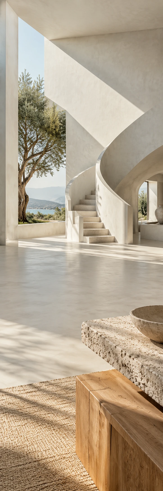

LIJN
ArchitectuurZakelijke nieuwsbrief
LIJN / EEN ONTWERPSTUDIE
Een huis
om het licht.
Bekijk de ontwerpstudie LIJN / VAN DICHTBIJ
Wat je weglaat,
maakt ruimte.
Een opening in een muur. De overgang van hout naar steen. Schaduw die de dag volgt. Een studie naar rust, materiaal en de lijnen die overblijven.
01Licht
02Materiaal
03Ruimte
Kijk nog even.
Het licht verschuift.
De ruimte begint waar het licht binnenvalt.
Bekijk de ontwerpstudie